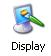
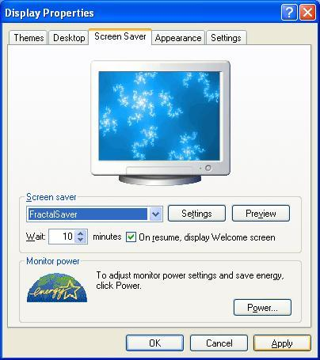

Installing FractalSaver
- Download the latest version of FractalSaver from the
FractalSaver Home Page and save to a temporary location on your hard drive.
- Run the "setup.exe". If you are running Windows NT/2000/XP/Vista you must have local admin
privileges to install FractalSaver in your system directory.
- As soon as the installer has completed you can use the screen saver. No restart
required.
- Set FractalSaver as the default screen saver from the Control Panel. To do this,
follow the instructions below.
- In Control Panel click on

icon.
- Click on Screen Saver tab and select FractalSaver from the list.

- Push Apply and FractalSaver has been correctly configured !